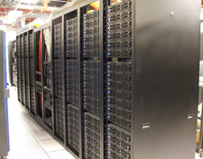
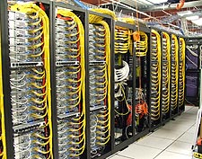

Emulab is a public facility, available without charge to most
researchers worldwide.
If you are unsure if you qualify for use, please see our
policies document,
or ask us.
If you think you qualify, you can
apply to start a new
project.
Emulab provides integrated access to a wide range of experimental
environments:
- Emulation
- An emulated experiment allows you to specify an arbitrary network
topology, giving you a controllable, predictable, and repeatable
environment, including PC nodes on which you have
full "root" access, running an operating system of
your choice.
- Live-Internet Experimentation
- Using the RON and PlanetLab
testbeds, Emulab provides you with a
full-featured environment for deploying, running, and
controlling your application at hundreds of sites around the
world.
- 802.11 Wireless
- Emulab's 802.11a/b/g testbed is deployed on multiple floors of an
office building. Nodes are under your full control and may act as
access points, clients, or in ad-hoc mode. All nodes have two wireless
interfaces, plus a wired control network.
- Software-Defined Radio
- USRP devices from the GNU Radio project give you control over Layer 1 of a
wireless network - everything from signal processing up is done in
software.
Emulab unifies all of these environments under a common user interface,
and integrates them into a common framework. This framework
provides abstractions, services, and namespaces common to all, such as
allocation and naming of nodes and links. By mapping the abstractions
into domain-specific mechanisms and internal names, Emulab masks much
of the heterogeneity of the different resources.
Links to help you get started:


{kind=link}
{kind=link}